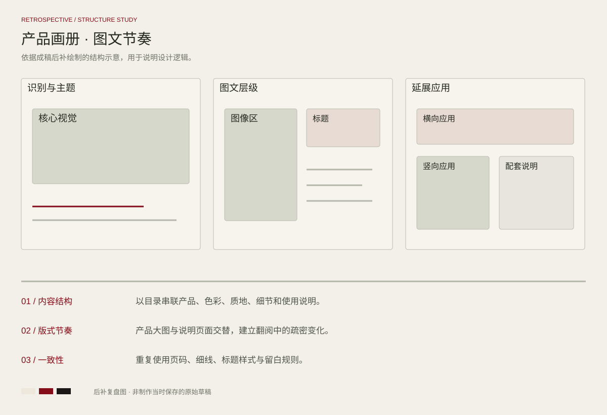

PROJECT 03 / EDITORIAL DESIGN
色彩，自有态度
Dior · 八页产品画册
围绕产品、色彩、质地和细节组织八页内容。通过大幅产品图、衬线文字与红白节奏建立连贯的翻阅体验。
完整设计 / FULL PROJECT点击图片放大查看
DESIGN REVIEW / STRUCTURE STUDY
方案复盘与版式推演
基于当前成稿后补绘制的结构示意，用于解释信息层级、构图与视觉延展；此图为方案复盘，不代表制作当时保存的原始草稿。

内容结构
以目录串联产品、色彩、质地、细节和使用说明。
版式节奏
产品大图与说明页面交替，建立翻阅中的疏密变化。
一致性
重复使用页码、细线、标题样式与留白规则。